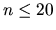

| Blowing Fuses |
Maybe you are familiar with the following situation. You have plugged in a lot of electrical devices, such as toasters, refrigerators, microwave ovens, computers, stereos, etc, and have them all running. But at the moment when you turn on the TV, the fuse blows, since the power drawn from all the machines is greater than the capacity of the fuse. Of course this is a great safety feature, avoiding that houses burn down too often due to fires ignited by overheating wires. But it is also annoying to walk down to the basement (or some other inconvenient place) to replace to fuse or switch it back on.
What one would like to have is a program that checks before turning on an
electrical device whether the combined power drawn by all running devices
exceeds the fuses capacity (and it blows), or whether it is safe to turn it on.
The first line of each test case contains three integers n, m and c,
where n is the number of devices (), m the number of operations
performed on these devices and c is the capacity of the fuse (in Amperes).
The following n lines contain one positive integer ci each, the
consumption (in Amperes) of the i-th device.
This is followed by m lines also containing one integer each, between 1 and
n inclusive. They describe a sequence of turn on/turn off operations
performed on the devices. For every number, the state of that particular
devices is toggled, i.e. if it is currently running, it is turned off, and if
it is currently turned off, it will by switched on. At the beginning all
devices are turned off.
The input will be terminated by a test case starting with
n = m = c = 0.
This test case should not be processed.
If the fuse is not blown, output the maximal power consumption by turned on devices that occurred
during the sequence.
Output a blank line after each test case.
2 2 10 5 7 1 2 3 6 10 2 5 7 2 1 2 3 1 3 0 0 0
Sequence 1 Fuse was blown. Sequence 2 Fuse was not blown. Maximal power consumption was 9 amperes.